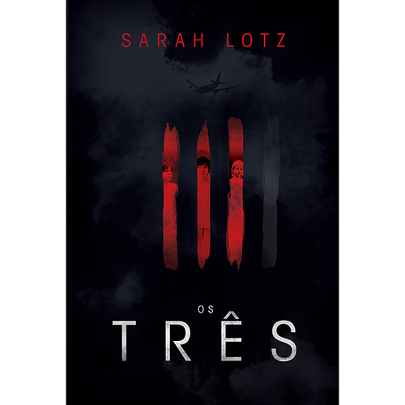

|  |
Os Três
Quinta-Feira Negra. O dia que nunca será esquecido. O dia em que quatro
aviões caem, quase no mesmo instante, em quatro pontos diferentes do mundo.
Há apenas quatro sobreviventes. Três são crianças. Elas emergem dos destroços
aparentemente ilesas, mas sofreram uma transformação. A quarta pessoa é Pamela May
Donald, que só vive tempo suficiente para deixar um alerta em seu celular
que mudará completamente o mundo:
"Eles estão aqui.
O menino. O menino, vigiem o menino, vigiem as pessoas mortas, ah, meu Deus,
elas são tantas... Estão vindo me pegar agora. Vamos todos embora logo. Todos nós.
Pastor Len, avise a eles que o menino, não é para ele..."
Sobre o Autor:
Sarah Lotz é roteirista e autora de romances pulp piction com uma queda pelo macabro e
por nomes falsos. Escreve histórias de terror urbano como SL Grey e uma série jovem de
zumbis com sua filha, Savannah, sob o pseudônimo Lily Herne, além de livros eróticos
como Helena S. Paige. Mora na Cidade do Cabo com a família e seus animais de estimação.
|
Valor: R$ 30,90 |